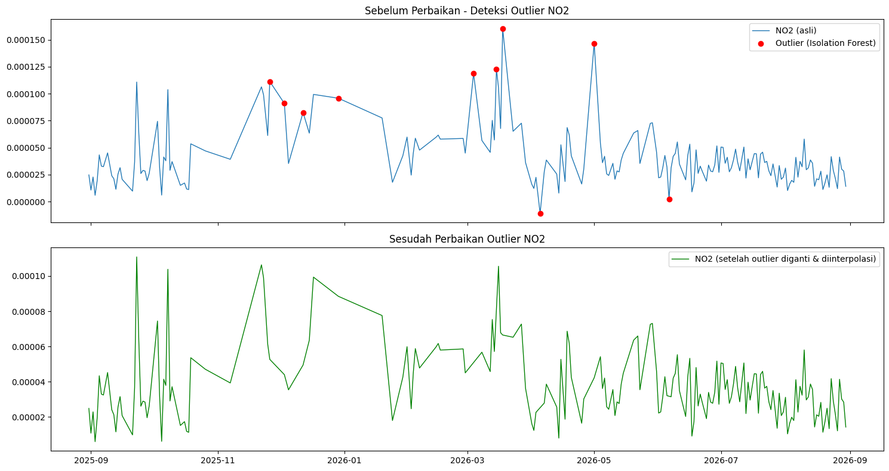

import pandas as pd
import numpy as np
import inspect
import tsfel.feature_extraction.features as tsfel_features
# ---------- 1. Muat dan bersihkan data ----------
df = pd.read_csv('no2kamal.csv')
df['date'] = pd.to_datetime(df['date'])
df = df.sort_values('date').reset_index(drop=True)
target_pollutant = 'NO2'
# --- FIX: paksa kolom target jadi numerik, nilai yang gagal dikonversi -> NaN ---
df[target_pollutant] = pd.to_numeric(df[target_pollutant], errors='coerce')
n_missing_before = df[target_pollutant].isna().sum()
print(f"Jumlah nilai non-numerik/kosong yang dikonversi jadi NaN: {n_missing_before}")
Q1 = df[target_pollutant].quantile(0.25)
Q3 = df[target_pollutant].quantile(0.75)
IQR = Q3 - Q1
lower_bound = Q1 - 1.5 * IQR
upper_bound = Q3 + 1.5 * IQR
df.loc[(df[target_pollutant] < lower_bound) | (df[target_pollutant] > upper_bound), target_pollutant] = np.nan
df_clean = df.set_index('date').interpolate(method='time').ffill().bfill()
fs = 1
signal_1d = df_clean[target_pollutant].astype(float).values
# ---------- 2. Daftar PERSIS fitur yang diminta ----------
FEATURE_LIST = """abs_energy auc autocorr average_power calc_centroid calc_max calc_mean
calc_median calc_min calc_std calc_var dfa distance ecdf ecdf_percentile ecdf_percentile_count
ecdf_slope entropy fundamental_frequency higuchi_fractal_dimension hist_mode human_range_energy
hurst_exponent interq_range kurtosis lempel_ziv lpcc max_frequency max_power_spectrum
maximum_fractal_length mean_abs_deviation mean_abs_diff mean_diff median_abs_deviation
median_abs_diff median_diff median_frequency mfcc mse negative_turning neighbourhood_peaks
petrosian_fractal_dimension pk_pk_distance positive_turning power_bandwidth rms skewness slope
spectral_centroid spectral_decrease spectral_distance spectral_entropy spectral_kurtosis
spectral_positive_turning spectral_roll_off spectral_roll_on spectral_skewness spectral_slope
spectral_spread spectral_variation spectrogram_mean_coeff sum_abs_diff wavelet_abs_mean
wavelet_energy wavelet_entropy wavelet_std wavelet_var zero_cross""".split()
print("Jumlah fitur yang diminta:", len(FEATURE_LIST))
def to_scalar(result):
if isinstance(result, dict) and "values" in result:
result = result["values"]
if isinstance(result, (list, tuple, np.ndarray)):
arr = np.asarray(result, dtype=float)
return float(np.nanmean(arr))
return float(result)
def extract_one(fn_name, signal, fs):
fn = getattr(tsfel_features, fn_name)
params = inspect.signature(fn).parameters
if "fs" in params:
result = fn(signal, fs)
else:
result = fn(signal)
return to_scalar(result)
row = {}
for fn_name in FEATURE_LIST:
row[fn_name] = extract_one(fn_name, signal_1d, fs)
extracted_features_final = pd.DataFrame([row])
print(f"Berhasil! Jumlah fitur yang dihasilkan untuk {target_pollutant}: {extracted_features_final.shape[1]}")
extracted_features_final.to_csv(f'{target_pollutant}_no2kamal_TSFEL.csv', index=False)
---------------------------------------------------------------------------
FileNotFoundError Traceback (most recent call last)
Cell In[1], line 7
4 import tsfel.feature_extraction.features as tsfel_features
6 # ---------- 1. Muat dan bersihkan data ----------
----> 7 df = pd.read_csv('no2kamal.csv')
8 df['date'] = pd.to_datetime(df['date'])
9 df = df.sort_values('date').reset_index(drop=True)
File C:\laragon\bin\python\python-3.10\lib\site-packages\pandas\io\parsers\readers.py:1026, in read_csv(filepath_or_buffer, sep, delimiter, header, names, index_col, usecols, dtype, engine, converters, true_values, false_values, skipinitialspace, skiprows, skipfooter, nrows, na_values, keep_default_na, na_filter, verbose, skip_blank_lines, parse_dates, infer_datetime_format, keep_date_col, date_parser, date_format, dayfirst, cache_dates, iterator, chunksize, compression, thousands, decimal, lineterminator, quotechar, quoting, doublequote, escapechar, comment, encoding, encoding_errors, dialect, on_bad_lines, delim_whitespace, low_memory, memory_map, float_precision, storage_options, dtype_backend)
1013 kwds_defaults = _refine_defaults_read(
1014 dialect,
1015 delimiter,
(...)
1022 dtype_backend=dtype_backend,
1023 )
1024 kwds.update(kwds_defaults)
-> 1026 return _read(filepath_or_buffer, kwds)
File C:\laragon\bin\python\python-3.10\lib\site-packages\pandas\io\parsers\readers.py:620, in _read(filepath_or_buffer, kwds)
617 _validate_names(kwds.get("names", None))
619 # Create the parser.
--> 620 parser = TextFileReader(filepath_or_buffer, **kwds)
622 if chunksize or iterator:
623 return parser
File C:\laragon\bin\python\python-3.10\lib\site-packages\pandas\io\parsers\readers.py:1620, in TextFileReader.__init__(self, f, engine, **kwds)
1617 self.options["has_index_names"] = kwds["has_index_names"]
1619 self.handles: IOHandles | None = None
-> 1620 self._engine = self._make_engine(f, self.engine)
File C:\laragon\bin\python\python-3.10\lib\site-packages\pandas\io\parsers\readers.py:1880, in TextFileReader._make_engine(self, f, engine)
1878 if "b" not in mode:
1879 mode += "b"
-> 1880 self.handles = get_handle(
1881 f,
1882 mode,
1883 encoding=self.options.get("encoding", None),
1884 compression=self.options.get("compression", None),
1885 memory_map=self.options.get("memory_map", False),
1886 is_text=is_text,
1887 errors=self.options.get("encoding_errors", "strict"),
1888 storage_options=self.options.get("storage_options", None),
1889 )
1890 assert self.handles is not None
1891 f = self.handles.handle
File C:\laragon\bin\python\python-3.10\lib\site-packages\pandas\io\common.py:873, in get_handle(path_or_buf, mode, encoding, compression, memory_map, is_text, errors, storage_options)
868 elif isinstance(handle, str):
869 # Check whether the filename is to be opened in binary mode.
870 # Binary mode does not support 'encoding' and 'newline'.
871 if ioargs.encoding and "b" not in ioargs.mode:
872 # Encoding
--> 873 handle = open(
874 handle,
875 ioargs.mode,
876 encoding=ioargs.encoding,
877 errors=errors,
878 newline="",
879 )
880 else:
881 # Binary mode
882 handle = open(handle, ioargs.mode)
FileNotFoundError: [Errno 2] No such file or directory: 'no2kamal.csv'
import pandas as pd
import numpy as np
import matplotlib.pyplot as plt
from sklearn.ensemble import IsolationForest
CONTAMINATION = 0.05
pol = "NO2"
# 1. Load data hasil crawling
df = pd.read_csv("no2_kamal.csv")
df["date"] = pd.to_datetime(df["date"])
df = df.sort_values("date").reset_index(drop=True)
df[pol] = pd.to_numeric(df[pol], errors="coerce")
df = df.dropna(subset=[pol]).copy()
# 2. Deteksi outlier dengan Isolation Forest
model = IsolationForest(contamination=CONTAMINATION, random_state=42)
pred = model.fit_predict(df[[pol]])
df["anomaly"] = pred # -1 = outlier, 1 = normal
outliers = df[df["anomaly"] == -1]
print(f"[{pol}] Jumlah outlier terdeteksi: {len(outliers)} dari {len(df)} data")
# 3. Ganti outlier jadi NaN, lalu interpolasi
df_fixed = df.copy()
df_fixed.loc[df_fixed["anomaly"] == -1, pol] = np.nan
df_fixed[pol] = df_fixed[pol].interpolate(method="linear").ffill().bfill()
# 4. Plot sebelum vs sesudah
fig, axes = plt.subplots(2, 1, figsize=(15, 8), sharex=True)
axes[0].plot(df["date"], df[pol], label=f"{pol} (asli)", linewidth=1)
axes[0].scatter(outliers["date"], outliers[pol], color="red",
marker="o", label="Outlier (Isolation Forest)", zorder=5)
axes[0].set_title(f"Sebelum Perbaikan - Deteksi Outlier {pol}")
axes[0].legend()
axes[1].plot(df_fixed["date"], df_fixed[pol], color="green", linewidth=1,
label=f"{pol} (setelah outlier diganti & diinterpolasi)")
axes[1].set_title(f"Sesudah Perbaikan Outlier {pol}")
axes[1].legend()
plt.tight_layout()
plt.savefig(f"outlier_{pol}_before_after.png", dpi=150)
plt.show()
df_fixed[["date", pol]].to_csv(f"{pol}_Kamal_Timeseries_fixed.csv", index=False)
[NO2] Jumlah outlier terdeteksi: 10 dari 194 data

import pandas as pd
pol = "NO2"
result_df = pd.read_csv(f"{pol}_Kamal_TSFEL.csv")
STATISTICAL = [
"abs_energy", "average_power", "calc_max", "calc_mean", "calc_median",
"calc_min", "calc_std", "calc_var", "ecdf", "ecdf_percentile",
"ecdf_percentile_count", "ecdf_slope", "entropy", "hist_mode",
"interq_range", "kurtosis", "mean_abs_deviation", "median_abs_deviation",
"pk_pk_distance", "rms", "skewness"
]
TEMPORAL = [
"auc", "autocorr", "calc_centroid", "dfa", "distance",
"higuchi_fractal_dimension", "hurst_exponent", "lempel_ziv",
"maximum_fractal_length", "mean_abs_diff", "mean_diff",
"median_abs_diff", "median_diff", "mse", "negative_turning",
"neighbourhood_peaks", "petrosian_fractal_dimension",
"positive_turning", "slope", "sum_abs_diff", "zero_cross"
]
SPECTRAL = [
"fundamental_frequency", "human_range_energy", "lpcc", "max_frequency",
"max_power_spectrum", "median_frequency", "mfcc", "power_bandwidth",
"spectral_centroid", "spectral_decrease", "spectral_distance",
"spectral_entropy", "spectral_kurtosis", "spectral_positive_turning",
"spectral_roll_off", "spectral_roll_on", "spectral_skewness",
"spectral_slope", "spectral_spread", "spectral_variation",
"spectrogram_mean_coeff", "wavelet_abs_mean", "wavelet_energy",
"wavelet_entropy", "wavelet_std", "wavelet_var"
]
print(f"=== Statistical Domain ({len(STATISTICAL)} fitur) ===")
for f in STATISTICAL:
print(f"| {f} | {result_df[f].values[0]} |")
print(f"\n=== Temporal Domain ({len(TEMPORAL)} fitur) ===")
for f in TEMPORAL:
print(f"| {f} | {result_df[f].values[0]} |")
print(f"\n=== Spectral Domain ({len(SPECTRAL)} fitur) ===")
for f in SPECTRAL:
print(f"| {f} | {result_df[f].values[0]} |")
=== Statistical Domain (21 fitur) ===
| abs_energy | 8.004483812520137e-07 |
| average_power | 2.193009263704147e-09 |
| calc_max | 8.261699258582667e-05 |
| calc_mean | 4.304078602292036e-05 |
| calc_median | 4.281815054127946e-05 |
| calc_min | -1.074266492651077e-05 |
| calc_std | 1.8289564610563453e-05 |
| calc_var | 3.3450817364397506e-10 |
| ecdf | 0.0150273224043715 |
| ecdf_percentile | 4.262600214133272e-05 |
| ecdf_percentile_count | 182.5 |
| ecdf_slope | 16798.33038578079 |
| entropy | 0.9993583051330968 |
| hist_mode | 4.060514670527482e-05 |
| interq_range | 2.93190165393753e-05 |
| kurtosis | -0.7653806440586406 |
| mean_abs_deviation | 1.527524349419392e-05 |
| median_abs_deviation | 1.4418096179724671e-05 |
| pk_pk_distance | 9.335965751233744e-05 |
| rms | 4.6765558214510725e-05 |
| skewness | -0.0484239574991572 |
=== Temporal Domain (21 fitur) ===
| auc | 0.0157404357614723 |
| autocorr | 11.0 |
| calc_centroid | 166.6274749901177 |
| dfa | 1.0650859251687137 |
| distance | 365.0000000236696 |
| higuchi_fractal_dimension | 1.7864516865906903 |
| hurst_exponent | 0.8803015029826863 |
| lempel_ziv | 0.1530054644808743 |
| maximum_fractal_length | -2.488890466514544 |
| mean_abs_diff | 7.365990754743968e-06 |
| mean_diff | -2.9038234708722294e-08 |
| median_abs_diff | 4.423392965691168e-06 |
| median_diff | 4.016578064433205e-07 |
| mse | 0.8092219596587233 |
| negative_turning | 60.0 |
| neighbourhood_peaks | 18.0 |
| petrosian_fractal_dimension | 1.021493424787648 |
| positive_turning | 60.0 |
| slope | -3.355667328498242e-08 |
| sum_abs_diff | 0.0026885866254815 |
| zero_cross | 2.0 |
=== Spectral Domain (26 fitur) ===
| fundamental_frequency | 0.0027322404371584 |
| human_range_energy | 0.0 |
| lpcc | 0.718735662231064 |
| max_frequency | 0.4207650273224044 |
| max_power_spectrum | 84.43438787262676 |
| median_frequency | 0.0491803278688524 |
| mfcc | 17.634818598055492 |
| power_bandwidth | 0.2486338797814207 |
| spectral_centroid | 0.116987781071585 |
| spectral_decrease | -2.117715250437212 |
| spectral_distance | -2.776739725085843 |
| spectral_entropy | 0.6253514711926725 |
| spectral_kurtosis | 2.953248019217717 |
| spectral_positive_turning | 57.0 |
| spectral_roll_off | 0.4207650273224044 |
| spectral_roll_on | 0.0 |
| spectral_skewness | 1.0989809936527493 |
| spectral_slope | -0.0343237171288835 |
| spectral_spread | 0.1425901303285489 |
| spectral_variation | 0.2474728843010087 |
| spectrogram_mean_coeff | 4.3894200449494655e-10 |
| wavelet_abs_mean | 1.4975436285281366e-06 |
| wavelet_energy | 2.512626063016688e-05 |
| wavelet_entropy | 2.1182052206750783 |
| wavelet_std | 2.507356733958021e-05 |
| wavelet_var | 6.99915761051232e-10 |
import pandas as pd
result_df = pd.read_csv("NO2_Kamal_TSFEL.csv")
print("Jumlah kolom:", result_df.shape[1])
print("Nama kolom:")
print(list(result_df.columns))
Jumlah kolom: 68
Nama kolom:
['abs_energy', 'auc', 'autocorr', 'average_power', 'calc_centroid', 'calc_max', 'calc_mean', 'calc_median', 'calc_min', 'calc_std', 'calc_var', 'dfa', 'distance', 'ecdf', 'ecdf_percentile', 'ecdf_percentile_count', 'ecdf_slope', 'entropy', 'fundamental_frequency', 'higuchi_fractal_dimension', 'hist_mode', 'human_range_energy', 'hurst_exponent', 'interq_range', 'kurtosis', 'lempel_ziv', 'lpcc', 'max_frequency', 'max_power_spectrum', 'maximum_fractal_length', 'mean_abs_deviation', 'mean_abs_diff', 'mean_diff', 'median_abs_deviation', 'median_abs_diff', 'median_diff', 'median_frequency', 'mfcc', 'mse', 'negative_turning', 'neighbourhood_peaks', 'petrosian_fractal_dimension', 'pk_pk_distance', 'positive_turning', 'power_bandwidth', 'rms', 'skewness', 'slope', 'spectral_centroid', 'spectral_decrease', 'spectral_distance', 'spectral_entropy', 'spectral_kurtosis', 'spectral_positive_turning', 'spectral_roll_off', 'spectral_roll_on', 'spectral_skewness', 'spectral_slope', 'spectral_spread', 'spectral_variation', 'spectrogram_mean_coeff', 'sum_abs_diff', 'wavelet_abs_mean', 'wavelet_energy', 'wavelet_entropy', 'wavelet_std', 'wavelet_var', 'zero_cross']